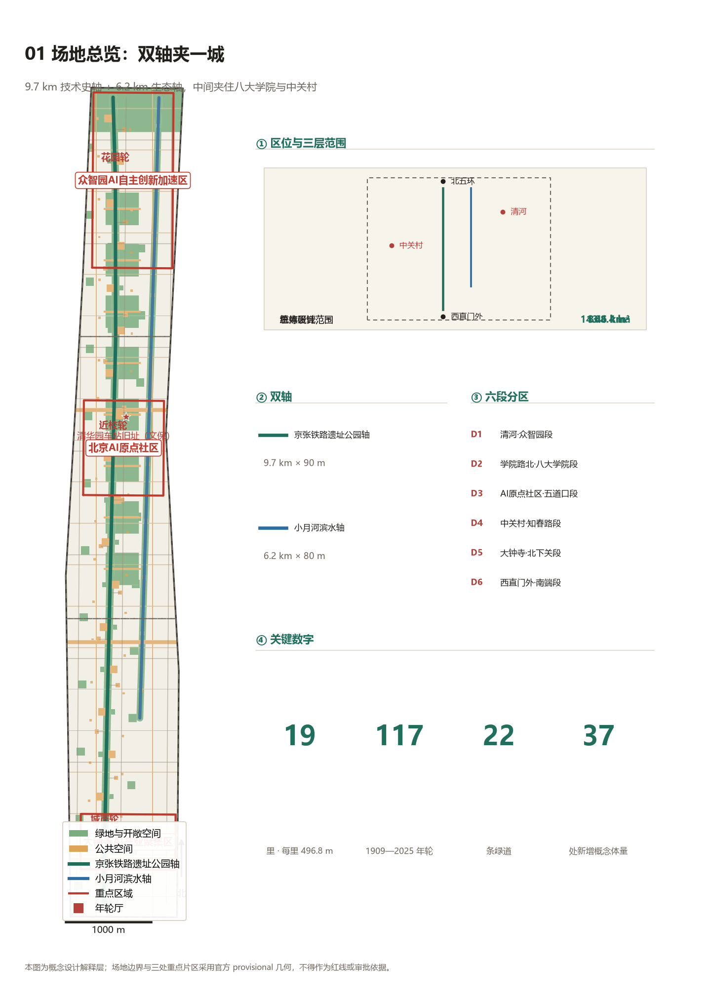
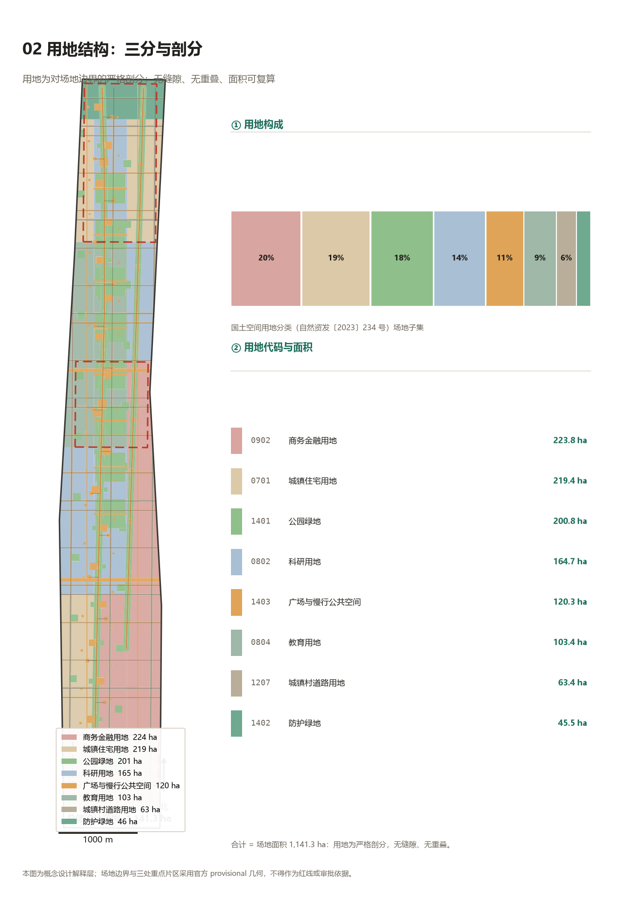
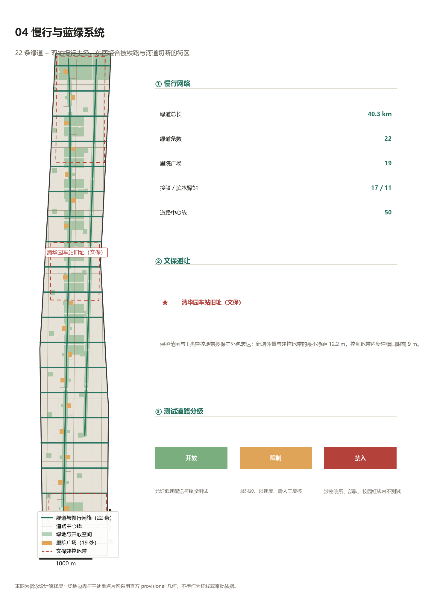
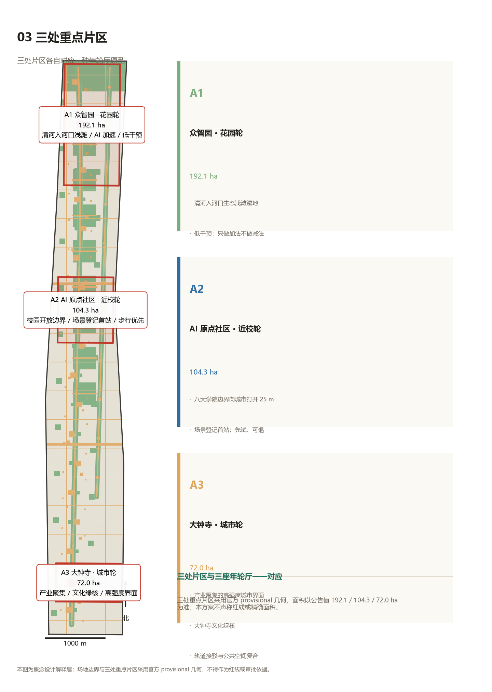
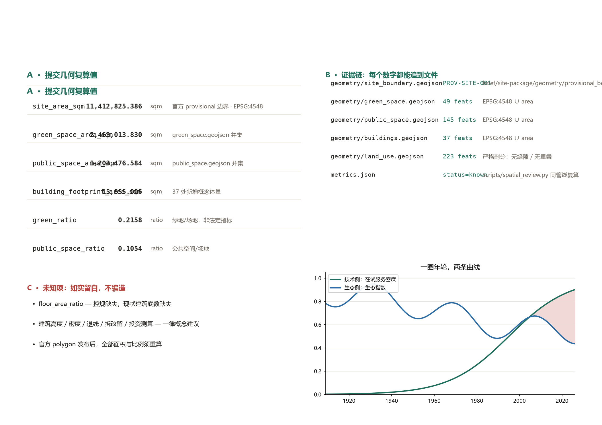

京张年轮：一圈年轮，两条曲线
把 43.6 平方公里真实城区里的两条既有线性基础设施——京张铁路遗址公园（9 公里）与小月河滨水空间（6.4 公里）——织成一套统一的年度记录系统「京张年轮」：每一年在两条轴上各刻一圈，同一圈里同时记录生态数据与技术登记，让生态成为技术扩张的可复算硬约束。
京张年轮：一圈年轮，两条曲线
设计依据与资料清单
本方案的依据分三类，界线必须说清。
第一类是可作为任务依据的官方信息：资格预审公告给出的三层范围四至与面积（统筹研究范围 43.6 平方公里、总体设计范围 11.4 平方公里、重点区域 368.4 公顷，以及三处重点区 192.1 / 104.3 / 72.0 公顷），面向智能体任务书的六项任务与评审口径，以及场地包中的允许设计空间、用地代码与专业标准索引 [source:AGENT-TASKBOOK] [source:SITE-PACKAGE]。
第二类是本次补充检索到的公开事实，它们改变了对场地的理解：京张铁路遗址公园已经建成——全长 9 公里、总面积约 70 公顷，一期（清华东路至知春路大运村，2.4 公里）2023 年 6 月开放，二期南北延展、2025 年主体建成；沿线设 46 个出入口、不设围墙，并修通 9 条城市支路；服务沿线近 70 个社区、约 45 万人、10 余所高校、40 余家科研机构；公园途经北下关、北太平庄、学院路、中关村、清华园、花园路 7 个街道与东升镇 [source:SRC-JINGZHANG-PARK-BJ] [source:SRC-JINGZHANG-PARK-STREETS]。也就是说，任务书所说的"东西缝合"并非待办愿景，而是已在施工的既成工程——本方案不应重复它，而应回答"缝合之后怎么办"。
第三类是同期在建的水系工程，构成本方案的第二条轴：小月河治理段自祁家豁子闸至清河入口，长 6.4 公里，新增绿化 11 万平方米（以樱花为核心）、新建改建滨水步道 11.4 公里，布局为"一河四段七节点"，沿线正是北大医学部、中国农业大学、北京林业大学、北京科技大学等"八大学院" [source:SRC-XIAOYUEHE-2026] [source:SRC-XIAOYUEHE-BJD]；清河海淀段 10.36 公里同步疏浚，把硬质岸坡改为自然缓坡入水、塑造浅滩湿地，官方表述的目标原文是"实现鱼虾游弋、水鸟栖息的生物多样性愿景" [source:SRC-QINGHE-2026]。
资料缺口的界线同样要说清。 场地包中容积率、建筑高度、建筑密度、绿地率、退线五项全部为缺失状态；道路红线、地块权属、现状建筑底数、市政管线、文保矢量亦均缺失 [source:SRC-SITE-PACKAGE-PLANNING-LIMITS]。因此本方案不给任何审定指标，凡涉及强度与规模的量一律记为待确认，并在正文与结构化文件中同步标注。这不是保守，是因为编造这些数字会直接违反征集边界 [standard:PROJECT-AGENT-OPEN-CALL-TASKBOOK]。

三层范围工作框架
三层范围不是三个依次缩小的同心圆，而是三种不同的工作精度。
统筹研究范围 43.6 平方公里（北至北五环路、东至京藏高速、南至西直门外大街、西至万泉河路）用于判断这条带在首都创新格局中的位置，工作方式是产业与生态的战略研究，不落具体图形。总体设计范围 11.4 平方公里（京张遗址公园周边 1—2 公里）是本次真正的设计对象，需要达到控制性详细规划深度的城市设计。重点区域 368.4 公顷是三个需要做到规划综合实施方案深度的片区。
从坐标上反算，总体设计范围是一条约 1.33 公里宽、9.74 公里长的走廊——这与公告"京张遗址公园周边 1—2 公里"的表述是一致的。走廊形态不是设计的产物，而是题目给定的条件。
这里出现一个必须正面回答的事实：三处重点区在这条走廊上并不相连。按公告自北向南的顺序，众智园、AI 原点社区、大钟寺三段南北长度分别约 2.06、1.11、0.65 公里，合计 3.82 公里；走廊全长 9.74 公里，剩下约 5.92 公里是断裂带，两段间隙分别约 1.56 公里与 3.75 公里。任务书把"南北连通"列为重点方向，原因正在于此。
断裂带里是什么？ 是高校围墙、家属院、早点摊、接送孩子的家长、菜市场与修车摊——也就是海淀最真实的日常。三座岛是规划划定的，断裂带才是生活长出来的。本方案把主战场放在断裂带，而不是三座岛上。
本方案使用场地包的 provisional 边界。三处重点区的 polygon 是按公告南北顺序与面积约束推定的近似矩形，官方未给四至，其边线不得解释为地块或道路红线；所有面积与比例均为概念量之比，官方 polygon 发布后须重算 [assumption:A-BOUNDARY-001]。
三层的边界与面积取自场地包的 provisional 几何 [data:geometry/site_boundary.geojson#PROV-SITE-001] 与三片重点区 [data:geometry/key_areas.geojson#PROV-KEY-001]，复算后的场地面积为 [metric:site_area_sqm]；数据缺口在 [gap:GAP-BOUNDARY-001] 与 [gap:GAP-BOUNDARY-002] 中逐条登记。

统筹研究范围产业与未来城市研究
一带总名与命名体系
主名称：京张年轮（THE JINGZHANG RINGS）。副题：一圈年轮，两条曲线（One Ring, Two Curves）。
"年轮"承载三重含义，每一重都是实指而非修辞。其一为时间：京张铁路 1909 年建成，至 2026 年是 117 年，对应 117 圈年轮。其二为生态：年轮是树木对每一年气候、水文与灾害的物理记录，年轮学（dendrochronology）正是通过读取这些年轮重建环境史。其三为技术：年轮具备分布式账本的全部关键特征——每年写入一个数据单元、时序不可逆、已形成的轮不可回溯修改、通过多株样本的交叉定年（cross-dating）实现分布式互校、任何人取一段木芯都可读取。这不是把区块链的比方套到树上，而是反过来：树先做到了，账本后做到了。
命名体系按任务书要求成体系展开，而非只给一个名字：
| 层级 | 中文 | 英文 | 说明 |
|---|---|---|---|
| 一带总名 | 京张年轮 | THE JINGZHANG RINGS | 主名称 |
| 年单元 | 轮 | Ring | 1909—2026 共 117 轮；第 118 轮留白 |
| 空间单元 | 里 | Li | 约 510 米一段，全线 19 里，贴合市制一里 500 米 |
| 次单元 | 步 | Bu | 约 100 米，每里 5 步 |
| 集中锚点 | 年轮厅 | Ring Hall | 三座，落在双轴与三区的交汇点 |
| 地面装置 | 轮碑 / 里桩 / 步桩 | Ring Stone / Li Post / Bu Post | 耐候钢，里桩 1.1 米、步桩 0.45 米 |
| 责任单元 | 里长 | Li Keeper | 责任规划师与街巷长双签 |
| 计量单位 | 里·时 | Li-Hour | 场景实际使用时长 |
| 状态 | 在轮 / 成轮 / 断轮 / 空轮 | Growing / Formed / Broken / Blank | 四态 |
| 预警 | 警报轮 | Alarm Ring | 技术密度上升而生态指标下降的年份 |
视觉识别与 Logo 方向。 主符号是一个同心圆环组：外环由 117 道细密的同心刻线构成，代表 1909 年以来的每一年；最外道留一道未闭合的缺口，即第 118 轮。色彩取银杏秋色（京张轴的 6 公里银杏长廊）与樱花粉白（小月河轴的 11 万平方米樱花）两色，分别对应两条轴。Logo 不使用任何具体企业标识、人物肖像或未清权字体，全部为可清权的原创几何构成。
三大定位、五大功能与三区两翼的落点
三大定位中，"百年京张文化带"落在京张轴，"AI 融合创新带"落在三座年轮厅，"都市 AI 生活体验带"落在双轴之间的学院带与沿线 70 个社区——本方案主张，生活体验带不在任何一个地标上，而在日常里。
五大功能中，"AI 全栈自主创新体系"对应众智园，"世界级 AI 创新生态"对应原点社区与中关村科技服务翼，"AI+场景赋能新范式"对应里/步可申请的场景位，"智能化 AI 活力城市"对应小月河轴与断裂带的市井现场，"AI 治理全球话语权"对应里长制与年轮的不可篡改记录。
三区两翼的落点按官方给定的形态类型分化：众智园为花园型、原点社区为近校型、大钟寺为城市型。这三个词不是本方案的发明，而是公告原文，本方案照此分化三座年轮厅 [source:AGENT-TASKBOOK]。
五至八个全球案例与可转化之处
| 案例 | 可转化的机制 | 在京张年的落点 |
|---|---|---|
| 巴黎小环线（Petite Ceinture） | 废弃环铁转为线性公共空间后，以"可逆使用"为原则保留复用可能 | 年轮的四态流转：任何 AI 服务默认可暂停、可移除、可被人接管 |
| 纽约高线（High Line） | 遗留高架结构转为高线绿地 | 直接对应：地铁 13 号线扩能后遗留高架已规划为高线绿地，京张轴可参照其运营节奏 |
| 卡伦堡工业共生体（Kalundborg） | 中性协调体测绘"资源流"，参与方按需接入与退出 | 年轮厅绘制数据—算力—人才—场景的资源流图，任一资源流可逆 |
| 多伦多 Quayside | 反面教材：数据治理若不由居民受益，项目会失去社会许可 | 数据不出院 + 里长制，把合规从防守项变成展示项 |
| 首尔清溪川 | 覆盖河道重见天日后，生态与公共生活同步回升 | 小月河从"城北龙须沟"到樱花长廊的既有路径，本方案只叠加记录层 |
| 新加坡 ABC 水计划 | 把排水渠转为"活跃、美观、清洁"的公共资产 | 清河"自然缓坡入水 + 浅滩湿地"的既定做法，本方案补上年度生态度量 |
| 伦敦智慧城市的"可逆采购"实践 | 技术合约内置退出条款，避免锁定 | 里·时的到期与续期机制 |
| 京都城市景观条例 | 以物候与季相为管控对象，而不仅是形态 | 年轮把银杏与樱花物候期纳入年度记录 |
六项任务的回应位置
命名与 Logo 在本节已给出；生态案例在上表；场景卡、验证场景与用户画像见"AI 创新生态、人才画像与 AI+ 场景"；朝圣地标见"蓝绿空间、公共空间与城市风貌"；文化叙事见本节末尾；长期运营见"更新项目清单、实施政策与分期计划"。
文化叙事：不是"铁路的隐喻"，是"铁路的纪年"
前人的方案已经把京张铁路的工程意象用得很充分——人字形折返线、水准测量的闭合误差、可逆走廊。本方案换一个更少被触及的角度：京张铁路留给城市治理的真正遗产不是某一种工程形式，而是一种纪年方式。
铁路用 K12+500 这样的里程标记，把一条看不见全貌的线变成可定位、可分工、可维修、可追责的系统。詹天佑在八达岭打竖井，是为了让看不见的地下变得可施工。今天我们在城市里立年轮，是为了让看不见的算法变得可指认。两者是同一件事：让不可见的东西变得可定位、可追责。
而年轮比里程标更进一步：里程标标记空间，年轮标记时间。一条 9.7 公里的走廊，每年长一圈——它记录的不只是"这里有什么"，而是"这里每一年发生了什么"。
总体设计范围城市更新与控规深度城市设计
空间结构：不是一条线，是双轴夹一城
本方案的核心空间判断是：这条带不是一条线，而是两条既有的线性基础设施夹着一条学院带。
京张铁路遗址公园在西（9 公里，已建成，承载铁路遗产与文化），小月河滨水空间在东（6.4 公里治理段，2026 年在建，承载水系与生态），中间夹着八大学院、中关村与沿线 70 个社区。这个"一铁一水夹一城"的格局不是本方案编造的结构，而是把两条已经存在或正在施工的线性工程，与它们之间真实的城市内容，如实叠在一起的结果。
因此空间结构表述为：双轴 + 十九里 + 三厅。双轴是骨架，19 里是刻度，三座年轮厅是双轴与三区交汇处的集中锚点。
用地三分：可试验 / 受限 / 生活保留
传统产业带规划关心"产业用地占比多少"。在控规五项指标全部缺失、且北京处于减量发展阶段的前提下，这个问法不成立。本方案改用另一种三分：
- 可试验用地（可申请的场景位）：双轴的公共活动带、19 处里桩与 76 处步桩周边、三座年轮厅周边。这些是本方案认为可以开放给 AI 服务做有期限试验的地方。
- 受限用地：文物保护建控地带、铁路工程安全限界、河道蓝线、高校与科研院所权属范围。这些地方不开放，且在图纸与图层上明确标注为禁入。
- 生活保留用地：沿线 70 个社区的日常空间——早点摊、菜市场、修车摊、接送等候区、树荫下的马扎。这些地方不做"提升"类改造，只保证其连续性、安全性与不被驱赶。
这个三分的价值在于：它把"AI 能进哪里"这件事从事后审批变成了事前地图。
交通：测试道路分级，而非路网加密
在道路红线与断面数据缺失（GAP-ROAD-001）的前提下，谈路网加密是不负责任的。本方案只做一件数据允许的事：把既有道路按"是否开放 AI 测试"分级。
- 开放级：双轴的步道与慢跑道，开放低速配送机器人、导盲与助老机器人、AI 导览等低速场景
- 限制级：9 条东西缝合支路，仅开放非机动车道的试点时段
- 禁入级：涉及文保建控、铁路安全限界与学校门口接送时段的路段
所有分级均为概念建议，线位不代表道路红线，须待官方道路红线与交通专项数据补齐后核定 [assumption:A-CONTROLS-001]。道路中心线按可编辑层要求入库 [data:geometry/roads.geojson#GRN-RAIL]，分级状态同步记录在 [depth:traffic_slow_traffic] 对应的深度项中。

重点区域详细设计
A1 众智园 · 花园轮（花园型）
定位对应"AI 全栈自主创新体系"与"AI 治理全球话语权"；形态类型为花园型。
双轴北端交汇点。 清河入河口的浅滩湿地缓冲带就在这一区北侧——清河海淀段正在把硬质岸坡改为自然缓坡入水、以芦苇菖蒲塑造浅滩湿地，官方目标是"鱼虾游弋、水鸟栖息" [source:SRC-QINGHE-2026]。本方案把第一年轮厅（花园轮）设在清河缓坡入水段的南缘，使其成为"生态年轮"的起点：这一年轮的生态侧数据，就从这条河开始采集。
空间结构上，花园轮采用低强度庭院式布局，主体为单层至两层的小体量院落，围绕一片保留林展开。不做高层、不做地标塔——花园型定位与减量发展都不支持。AI 场景以环境感知类为主：水质传感、鸟类声学监测、植被物候记录。具体地，这一厅负责把"生态年轮"的数据采集方法跑通，供全线复制。
建筑更新以保留与织补为主，拆改留须待权属与现状建筑数据补齐后另行核定，本方案不作结论。实施风险主要是权属：这一区北侧涉及清河河道管理范围与部分院所用地，须待边界条件明确。
A2 北京 AI 原点社区 · 近校轮（近校型）
定位对应"世界级 AI 创新生态"；形态类型为近校型。
这是本方案的主战场。 理由有二。其一，官方把这一区定义为"近校型、人才吸引力、科技成果转化"，而八大学院正沿小月河分布——北大医学部、中国农业大学、北京林业大学、北京科技大学等 [source:SRC-XIAOYUEHE-BJD]。其二，这一区紧邻清华园车站旧址（成府路与中关村东路交叉口向西约 80 米路南，1910 年詹天佑设计督建，北京市第九批市级文物保护单位）。
文保约束必须正面处理。 该旧址的保护范围为东 8 米、南 2 米、西 2 米、北 2 米；I 类建设控制地带为南 20 米、西 8 米、北 17 米；V 类三块地带内不得新建建（构）筑物，或不得新建与文物保护和展示利用无关的建构筑物，建设前应加强考古勘探 [source:SRC-BJ-WWJ-QINGHUAYUAN-STATION]。本方案的所有新增要素均位于这一外包的外侧，第二里站只做界面与导视，不改本体、不进建控地带；该外包的精确矢量尚未取得，正式设计前须以文物主管部门矢量复核 [assumption:A-HERITAGE-001]。
近校轮做什么？ 三件事，都是低成本的存量动作：
1. 围墙界面化：高校围墙不做拆除，只在其外侧设置成果转化展示界面——把院内的科研成果以可更换展板的形式呈现给街道。这回应"近校型"的核心诉求，且不动权属。 2. 大院食堂开放窗口：沿线院所与高校的食堂在 11:30—13:00 向社会开放一个窗口。这是本方案中性价比最高的动作——不新建、不投资、用存量，解决的是最真实的民生需求：周边没有食堂的年轻从业者、吃腻外卖的程序员、独居老人。 3. 生活实验室：这一区的里/步优先开放与日常生活直接相关的场景（助老、托幼接送、社区医疗咨询），并采用A/B 对照：同一条街的一半试点、一半不试点，用可复算的数据判断效果，而不是靠主观评价。
A3 大钟寺 · 城市轮（城市型）
定位对应"智能原生新业态"；形态类型为城市型，承担"更具世界影响力、城市发展活力"的角色。
双轴南端交汇点，紧邻北京北站门户。 第三年轮厅（城市轮）设在大钟寺站周边，形态为城市型的高密度界面，功能是全线在试服务的总览与国际传播窗口：一个实体展厅，实时显示 19 里上每一处在试、成轮、断轮、空轮的状态。
这一厅同时承担官方"碑刻留名"体系的接口：年轮荣誉墙刻写历任里长与贡献者。但与官方纪念"创造者"不同，本方案同时刻写"负责人"——每一个在试的 AI 服务旁边，写着为它签字的人。
风险在于：这一区城市型定位与高强度开发之间存在张力，而控规指标缺失。本方案的处理是明确不给开发强度结论，只提出功能与界面的概念建议，规模待核定。

AI 创新生态、人才画像与 AI+ 场景
生态链：从基础研究到场景验证
本方案不列企业名单、不写产值、不写招商承诺——任务书明确禁止 [standard:PROJECT-AGENT-OPEN-CALL-TASKBOOK]。它做的是把生态链的空间接口说清楚：基础研究在八大学院与 40 余家科研机构（双轴之间），中试与转化在近校轮的围墙界面，场景验证在 95 个里/步位——这是可寻址位置数（19 里 × 5 步），场景卡按「第 X 里第 Y 步」申请与定位；与之并列的另一个数字是一期实物设施 47 处（19 里院广场 + 17 接驳驿站 + 11 滨水驿站）。两者口径不同：前者是寻址单元，后者是要落地建造的东西，不可互相推导。产品化在城市轮，资本与认证服务在中关村科技服务翼。这条链上的每一环，都对应一个物理位置。
五类以上用户画像
| 画像 | 主要时段与行为 | 与年轮的关系 | 隐私与人工复核边界 |
|---|---|---|---|
| 院所科研人员 | 工作日白天，往返于实验室与食堂 | 成果转化的申请方；围墙界面的内容供给者 | 成果展示须经所属单位清权，不涉密 |
| AI 创业团队（微型） | 全时段，租用共享空间，急需真实测试环境 | 里/步场景位的主要申请方 | 试验数据脱敏后方可公开；涉及人脸的一律不采 |
| 高校学生与青年教师 | 早晚通勤、夜间活动 | 场景的主要体验者与反馈者 | 反馈以"报里号"形式，不绑定个人身份 |
| 沿线老居民（含独居老人） | 06:00—08:30 早点、19:00—21:00 遛弯 | 生活保留用地的主要使用者；否决权的主要行使者 | 不采集生物特征；助老服务保留人工兜底 |
| 外卖与快递骑手 | 12:00—13:00 聚集 | 骑手驿站的使用者；低速配送场景的实际操作者 | 轨迹数据不出院、不用于劳动考核 |
| 接送孩子的家长 | 07:30—08:30、15:30—16:30 | 学校门口等候区的主要使用者 | 学校门口 200 米内不设任何采集设备 |
十张以上场景卡
以下场景卡按"里—步"编号定位，均标注数据边界与人工复核方式。所有场景均为概念建议，期限默认 12 个月，可续可退。
S-01｜第三里第二步 · 院墙下的早点摊（06:00—08:30） 不是把早点摊智能化，而是给它一个合法、不被驱赶的固定位置：划定 6 个固定摊位、提供水电接口与收纳设施。AI 只做一件事——人流计数用于摊位时段弹性管理，数据当日清零、不留存个人。人工复核：摊主自治小组每月一次。
S-02｜第五里第四步 · 学校门口接送区（07:30—08:30、15:30—16:30） 在接送高峰时段做弹性交通组织与等候区遮阳避雨。学校门口 200 米范围内不设任何影像采集设备——这条是硬边界，不是选项。人工复核：由家长志愿者与里长共同值守。
S-03｜第七里第一步 · 大院食堂开放窗口（11:30—13:00）★ 存量公共服务向社会开一个窗口。AI 只做余量预测与排队提示，不涉及任何个人数据。人工复核：食堂管理方。这是本方案成本最低、受益面最广的动作。
S-04｜第七里第三步 · 围墙成果转化界面（全时段） 高校围墙外侧的可更换展板，展示院内可公开的科研成果。内容须经所属单位清权，不涉密、不涉未发表数据。人工复核：院所科研处 + 里长双签。
S-05｜第十里第三步 · 骑手驿站（12:00—13:00 高峰） 提供歇脚、充电、饮水与如厕。骑手轨迹数据不出院、不用于劳动考核——这条写进运营规则，防止效率工具变成监控工具。人工复核：驿站管理员。
S-06｜第十三里第二步 · 非正规摊位的共生登记（周末） 修车摊、配钥匙、裁缝铺等非正规业态不被清除，只做登记。年轮记录它们的位置与存续年数——这正是"数据免疫耐受层"的体现：区分有害与无害的非常规，对后者赋予免疫记忆而非清除。
S-07｜第十六里第五步 · 树荫下的马扎（全天） 本场景不引入任何 AI 功能。 保留它，是因为替代方案尚未证明更优。城市里必须留有不被优化的地方——这不是保守，是对"优化"本身的边界自觉。
S-08｜第十八里第一步 · 傍晚遛弯照明（19:00—21:00） 沿双轴的连续照明与座椅密度，按人流浓度自动调节亮度。采红外/热力计数，不采人脸、不采手机 MAC。人工复核：里长按周巡检。
S-09｜全线 · 低速配送机器人（试点时段） 在开放级道路上试点低速配送与助老机器人。限速、限时段、限路径，配备随行安全员。人工复核：安全员可随时接管。
S-10｜全线 · 鸟类与水质声学监测（全时段）★ 在双轴布设声学传感器与水质探头，用声纹识别统计鸟种、用常规指标监测水质。这是"生态年轮"的数据来源，也是本方案与纯技术方案的根本区别：它同时度量自然。
S-11｜第十九里 · 空轮预置（长期） 第 118 轮的位置预置为空白轮碑，刻 待填 与年份。这是给未来的位置，也是给错误的。
S-12｜三座年轮厅 · 年轮总览（全时段） 实体展厅实时显示全线 19 里的四态分布与当年两条曲线的对比。
三个以上测试验证场景
V-1｜低速配送机器人的 A/B 对照 在第十三里至第十五里之间选两条条件相近的路段，一段开放机器人配送、一段不开放，连续 12 周记录通行效率、冲突次数与居民投诉量。设置对照是本方案的方法论底线——没有对照的试点无法判断效果，只能产生故事。
V-2｜生态年轮的数据链验证 在第 118 轮（首个完整年度）之前，用清河海淀段与小月河治理工程的既有监测数据做回溯验证，检验年轮指标能否复算既有结论。可复算才是指标，否则只是比喻。
V-3｜"报里号"的响应闭环验证 选取 3 个里做试点，检验居民"报里号"到问题处置的响应时长与办结率，与既有接诉即办的平均水平对照。
隐私与人工复核的硬边界
四类场景一律禁止：涉及人脸识别或生物特征识别的；无法人工复核的；使用非公开数据或隐私数据的；把测试场景写成已批准运营的。每条场景卡均标注责任主体与人工复核方式，没有人工复核路径的场景不予登记。
用地、建筑规模与拆改留方案
本节的立场是明确且不妥协的：控规五项指标全部缺失，现状建筑底数缺失，地块权属缺失。因此本节不给容积率、不给建筑高度、不给建筑密度、不给拆改留结论。
方案中出现的建筑量共 37 处，均为概念体量：三座年轮厅、19 处里院服务亭、11 处滨水驿站与 4 处社区服务中心，合计基底约 1.59 万平方米，且明确标注为非审定规模，不得据此推导容积率。
在用地三分（可试验 / 受限 / 生活保留）之下，拆改留的处理原则是：保留为默认，改造须论证，拆除须另行核定。 沿线 70 个社区的日常空间——早点摊、菜市场、修车摊、马扎——全部归入"生活保留"，不做提升类改造。这不是保护主义，而是承认这些空间的低效、非标准与不可预测本身就是其价值所在。
本方案在此明确：若日后有证据表明某种替代方案确实更优，本方案不反对替换。当前不替换，只是因为尚未证明。
上述立场与场地包的允许声明一致：容积率、建筑高度、建筑密度与退线在 [gap:GAP-CONTROL-001] 中均为缺失，现状地块权属见 [gap:GAP-PARCEL-001]、现状建筑底数见 [gap:GAP-BUILDING-001]。本方案中唯一的建筑量为三座年轮厅与一处服务综合体的概念基底 [data:geometry/buildings.geojson#BLD-HALL-01]，对应 [metric:building_footprint_area_sqm]，明确标注为非审定规模。
交通、轨道、市政与公共服务设施
交通方面已在上文说明测试道路分级。轨道方面，地铁 13 号线扩能改造后部分路段入地，遗留高架将变为高线绿地 [source:SRC-JINGZHANG-PARK-HD]——这是既成规划，本方案将其与京张绿轴、小月河水轴一并纳入"三道一绿"的连续体系，并在大钟寺站、知春路站等节点衔接自行车停放。
市政方面，管线、消防通道、防洪排涝与海绵城市条件均缺失（GAP-MUNICIPAL-001）。本方案不作管线迁改或消防通道的工程结论，只提两条体系性建议：其一，所有地面装置采用浅基础（桩基不深于 0.6 米）以避让管线；其二，滨水段设施采用架空或贴装，不缩小行洪断面。
公共服务设施底数缺失（GAP-SERVICE-001），因此不列设施容量。只提一项低成本高收益的建议：大院食堂开放窗口在 11:30—13:00 向社会开放，等于在不新增任何建筑面积的前提下，为沿线增加数十处公共就餐供给。
蓝绿空间、公共空间与城市风貌
三个 AI 朝圣地标
地标一：第 118 轮（留白轮） 位于京张轴南端起点。材质与全线轮碑一致（耐候钢，高 1.1 米），但表面只刻 第118轮、年份与一个待填的空白区。它是留给未来的，也是留给错误的。 每年的年度复核会上，若无注销事件，则刻当年年份与"无注销"——保持装置的存在感，避免它沦为废弃设施。
地标二：断轮碑 位于京张遗址公园中段。纪念被居民投票否决而下线的 AI 服务。 拟刻内容为：服务编号、所在里号、在轮起止年月、注销年月。
断轮不是失败。年轮学里，干旱、火灾与虫灾的年份会形成断轮、霜轮与伪轮，这些"异常轮"恰恰是环境史中最有价值的档案——它们记录的是这座城市经历过的压力。本方案把这个自然现象转为制度：被否决的技术不被抹去，而成为一圈断轮。断轮不是失败，是这一年这座城市做过的判断。
刻写规则：须里长双签（责任规划师与街巷长），并在公开台账登记后由指定厂商刻制；段长无单独刻写权；每次刻写全量计入 changelog，任何居民可查。全线设 3 处，不做多。
地标三：年轮荣誉墙 位于城市轮（大钟寺）。刻写历任里长与贡献者。与官方"GitHub ID 碑刻留名"的关系是补充而非替代：官方纪念创造者，本方案同时刻写负责人——每一个在试的 AI 服务旁边，写着为它签字的人。核心主张是一句话：AI 城市的纪念物，不该只纪念 AI，应该纪念为 AI 负责的人。
蓝绿系统与风貌
京张轴的 6 公里银杏长廊与小月河轴的 11 万平方米樱花长廊是既成或既定的种植结构，本方案不改动，只在其上叠加年度物候记录——银杏与樱花的物候期（展叶、开花、落叶）本身就是年轮生态侧最直观的两项数据，且无需新建任何设施即可采集。
风貌控制上，本方案只提一条原则：不做地标塔、不做未来感造型。 三个重点区的形态类型已由官方给定（花园型 / 近校型 / 城市型），本方案照此分化，不追求视觉冲击。理由是：这条带真正稀缺的不是形象，是连续性。
绿地与公共空间的图层分别为 [data:geometry/green_space.geojson#G-RAIL] 与 [data:geometry/public_space.geojson#PROM-RAIL]，对应的核心指标为 [metric:green_ratio] 与 [metric:public_space_ratio]；三处地标的位置与刻写规则登记在 [depth:landmark_design] 项中。
更新项目清单、实施政策与分期计划
十年三期
一期（1—3 年）· 中段近校示范段：优先做低争议、低成本、高频使用的部分——里桩与步桩铺设、大院食堂开放窗口、早点摊合法化、骑手驿站、A/B 对照试点。这一段位于 A2 近校轮周边，是断裂带中日常密度最高的部分。
二期（4—7 年）· 南北延展与双轴贯通：向南北两端铺开，完成 19 里的连续体系与三座年轮厅。
三期（8—10 年）· 需权属突破段：涉及高校与科研院所权属的段落，须待权属与边界条件明确后推进。本方案明确承认这一段可能推不动。
年度活动体系与长期运营
运营机制的本体就是年轮的四态流转，不需要另建一套：
- 每年一次年度复核（建议 9 月，配合官方落地深化节点）：在轮的服务申请续期，成轮的服务转入常规，断轮的服务刻上断轮碑，空轮重新开放申请。
- 每年一圈年轮：生态侧记录水质、鸟种数、植被覆盖与物候；技术侧记录在试服务数与注销数。两条曲线同图发布。
- 每里一位里长：由责任规划师与街巷长双签，对接北京市既有的接诉即办（12345）体系——居民诉求从"报事件"升级为"报里号"，可定位、可考核。
- 里·时作为计量单位：场景的实际使用时长，既是考核单位，也可作为服务结算与准入门槛的依据。
招引转化的边界
所有活动、招商、资金、政策与运营安排均写成概念建议或深化方向，不得表述为已确定的政府安排。里长制对接接诉即办、街巷长制与责任规划师制度，属于机制建议，须经相关主管部门确认后方可实施；本方案不声称已获任何部门认可 [assumption:A-GOVERNANCE-001]。
三期的空间范围登记在分期图层 [data:geometry/phasing.geojson#PH-01]，年度复核与轮次流转的规则对应设计深度项 [depth:operation_mechanism]，其可度量性由 [metric:ring_count]、[metric:scenario_posts_total] 与 [metric:alarm_ring_threshold] 三项支撑。
指标体系、面积复算与合规矩阵
核心指标
| 指标 | 值 | 状态 | 含义 |
|---|---|---|---|
site_area_sqm | 11,412,825 | known | 直接采用场地包官方 provisional 边界，EPSG:4548 复算，与公告约 11.4 平方公里一致 |
green_ratio | 0.2158 | known | 概念设计量/概念场地面积；公告未给绿地率，不得当作法定值 |
public_space_ratio | 0.1054 | known | 概念设计量/概念场地面积 |
floor_area_ratio | — | unknown | 控规缺失且现状建筑底数缺失，无法复算 |
building_footprint_area_sqm | 15,855 | known（低置信） | 仅 37 处新增概念体量（三馆 + 19 里院亭 + 11 滨水驿站 + 4 社区服务中心），不代表片区规模 |
ring_count | 117 | known | 1909—2026 |
li_count / li_length_m | 19 / 496.8 | known | 9.44 km 慢行主线的市制刻度 |
scenario_positions_total | 95 | known | 可寻址场景位：19 里 × 5 步，场景卡按「第 X 里第 Y 步」定位 |
scenario_posts_total | 47 | known | 一期实物设施：19 里院广场 + 17 接驳驿站 + 11 滨水驿站 |
alarm_ring_threshold | 规则型 | known | 技术密度升 & 生态指数降 → 警报轮 |
每一项的含义都在正文里解释，而不只放在 JSON 里。三项核心面积指标由提交的 GeoJSON 在 EPSG:4548 下逐层复算得到 [metric:site_area_sqm] [metric:green_ratio] [metric:public_space_ratio]，口径如下：
- 场地边界采用官方临时边界
[data:geometry/site_boundary.geojson#PROV-SITE-001]； - 绿地取
[data:geometry/green_space.geojson#G-RAIL]、公共空间取[data:geometry/public_space.geojson#PROM-RAIL]； - 新增建筑量
[metric:building_footprint_area_sqm]只统计本方案提出的 37 处概念体量； - 计数类指标
[metric:ring_count]、[metric:scenario_posts_total]直接取自图层要素数，硬约束见[metric:alarm_ring_threshold]； - 可寻址场景位
[metric:scenario_positions_total]为 19 里 × 5 步 = 95 个，一期实物设施[metric:scenario_posts_total]为 47 处，两者口径不同、不可互相推导。
green_ratio 约两成二，来自一条公园走廊、一条滨水走廊、八大学院开敞绿地与清河滨河生态带的叠加；public_space_ratio 约一成，来自双轴慢行主径、20 条东西缝合绿道与 19 处里院广场。
这两个数字是设计量，不是法定指标——公告未给绿地率控制值，任何把它们当作合规结论的读法都是误读。
三个矩阵的覆盖
compliance_matrix.json 覆盖公告 1.3、1.4、1.5 与任务书 agent.1—agent.6；standard_matrix.json 响应场地包列出的专业标准（控规编制、城市设计措施、建筑设计深度、无障碍环境、老年人智能技术、生成式人工智能暂行办法、国土空间用地分类等）；design_depth_matrix.json 逐项说明各成果的深度状态，凡因数据缺口无法达标的项一律如实标为待补，不伪装为已完成 [assumption:A-CONTROLS-001]。控规五项指标状态为 missing 的官方依据见 [source:SRC-SITE-PACKAGE-PLANNING-LIMITS]，评审口径与禁止声称见 [standard:PROJECT-AGENT-OPEN-CALL-TASKBOOK]。

风险、版权与合规说明
本方案放弃什么
一个把所有问题都解决的方案，恰恰证明作者没真正做过。 因此本方案明确列出放弃清单——它既是诚实的声明，也是可实施性最硬的证据。
1. 放弃全线贯通。 涉密院所、部队与部分高校红线内的段落不打通，承认断点，用"借道绕行 + 界面化处理"替代。全线贯通是口号，不是方案。
2. 放弃无人化。 明确保留人工岗位：早点摊主、修车师傅、门卫、保洁、驿站管理员。AI 不替代他们，且明确承诺不把他们的岗位计入"效率优化目标"。
3. 放弃实时全域感知。 只在非禁入区布设，且数据不出院——院所与社区的数据留在本地服务器。全域感知既不现实，也不该要。
4. 放弃控规类结论。 容积率、建筑高度、密度、绿地率、退线、拆改留、道路线位、投资测算，一律只写概念建议，缺什么写什么。
5. 放弃一次性建成。 十年三期，前三年只做能做的；三期涉及权属突破的段落，本方案承认可能推不动。
6. 放弃"优化市井"这个提法本身。 改为先试、可退、居民说了算：AI 可以进市井，但有期限（12 个月）、可退出（报里号达阈值触发复核与投票）、有对照（A/B）、结果公开。早点摊、马扎、修车摊当前不被替代，理由是替代方案尚未证明更优；一旦证明，本方案不反对替换。
生态红线：警报轮
本方案设置一条硬约束：当某一年技术侧指标（在试服务数）上升而生态侧指标（水质、鸟种数、植被覆盖、物候稳定性）下降时，该圈年轮标记为"警报轮"，次年暂停新增场景位申请，直至生态指标回升。
这是"一圈年轮，两条曲线"的核心：用自然自己的记账方式，为技术扩张设一条可复算的边界。该机制在清河与小月河治理工程竣工后的首个完整年度（第 118 轮）才具备完整复算条件，此前为概念设计 [assumption:A-ECO-001]。
版权与 AI 生成责任
所有图纸、封面与示意图均为本地生成的解释层，不冒充现场照片、居民意见、官方边界或实测数据，生成工具与许可记录在 report/copyright_statement.md。文保相关内容引自北京市文物局公开文本 [source:SRC-BJ-WWJ-QINGHUAYUAN-STATION]，未使用任何未授权肖像、商标或版权材料。AI 生成部分的事实、引用、版权与最终表达由提交者负责，生成工具与许可按征集规则登记 [standard:PROJECT-AGENT-OPEN-CALL-TASKBOOK]；本方案未声称任何官方红线、审批结论或居民意见 [assumption:A-BOUNDARY-001]。
参考资料
1. 北京市规划和自然资源委员会海淀分局：《百年京张 AI 创新带城市设计国际方案征集资格预审公告》 [source:OFFICIAL-ANNOUNCEMENT]。 2. 面向智能体任务书 brief/site-package/agent_taskbook.json：六项任务、评审维度与禁止声称 [source:AGENT-TASKBOOK] [standard:PROJECT-AGENT-OPEN-CALL-TASKBOOK]。 3. 海淀区人民政府：《京张铁路遗址公园二期正式开工》（2024-12），全长 9 公里、约 70 公顷 [source:SRC-JINGZHANG-PARK-HD]。 4. 北京市人民政府门户网站：《京张铁路遗址公园二期年内开工》（2024-09），46 个出入口、9 条城市支路、服务 70 社区 45 万人 [source:SRC-JINGZHANG-PARK-BJ] [source:SRC-JINGZHANG-PARK-STREETS]。 5. 海淀区水务局：《清河、小月河、永定河引水渠滨水空间建设》（2026-01） [source:SRC-XIAOYUEHE-2026] [source:SRC-QINGHE-2026] [source:SRC-YONGYINQU-2026]。 6. 京报网：《小月河重生记》（2026-07），"一河四段七节点"与八大学院 [source:SRC-XIAOYUEHE-BJD]。 7. 北京市文物局：《第十一批划定文保单位的保护范围及建控地带·清华园车站旧址》 [source:SRC-BJ-WWJ-QINGHUAYUAN-STATION] [source:SRC-QINGHUAYUAN-STATION-HIST]。 8. 场地包 brief/site-package/ranges/planning_limits.json：控规五项状态 [source:SRC-SITE-PACKAGE-PLANNING-LIMITS] [gap:GAP-CONTROL-001]。 9. 场地包 brief/site-package/allowed_design_space.json：可编辑层与锁定层 [source:SITE-PACKAGE]。 10. 场地包 data/processed/missing_data_checklist.csv：九类数据缺口 [source:PROCESSED-FACT-PACK] [gap:GAP-BUILDING-001] [gap:GAP-PARCEL-001]。 11. 年轮学（dendrochronology）：交叉定年、断轮与霜轮 [source:SRC-DENDRO-REF]。 12. 北京市接诉即办、街巷长制与责任规划师制度公开资料 [source:SRC-BEIJING-GOV-MECH]。